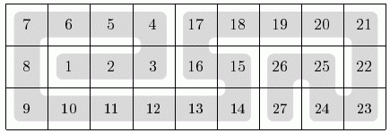

一个3*n的棋盘上，有一条蛇在棋盘上。从蛇头到蛇尾刚好是1~3*n。如下图是一合法方案。

现在你只知道某几个位置上的数，其他位置都不确定。请构造出任意一组合法的蛇形图。 保证数据有解。
第一行一个数n。 接下来3行，每行n个数。 令第i行第j个数为a[i][j] 如果a[i][j]是0，则这一位不确定，否则这一位是a[i][j]。
输出一个合法方案。
9 0 0 5 0 17 0 0 0 21 8 0 0 3 16 0 0 25 0 0 0 0 0 0 0 0 0 23
7 6 5 4 17 18 19 20 21 8 1 2 3 16 15 26 25 22 9 10 11 12 13 14 27 24 23
n≤1000